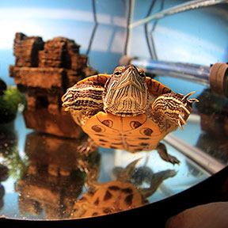

<body>

	<header>
		<h1> Michaela Tuor</h1>
	</header>

	<div class= "clearfix">
	
		<div class="left">
			<ul id="navigationMenu">
				
				<li>
				 
					<a class="home selected" href="index.html"> 
						<span>Home</span>
					</a>
				</li>
			
				<li>
					<a class="about" href="#">
						<span>About</span>
					</a>
				</li>
			
				<li>
					<a class="portfolio" href="portfolio.html">
						<span>Portfolio</span>
					</a>
				</li>
			
				<li>
					<a class="contact" href="#">
						<span>Contact</span>
					</a>
				</li>
			</ul>
		</div>
		
		
		<div class="right">
	
				<figure></figure>
	
		</div>
		</div>
	
	
		<div class="wrapper2 clearfix">
		 <p2> Home page <p2>
		
		</div>
		
	<div class="list wrapper">
	
		<section class="col1">
	
		<h2>Photography<h2>
			<center>
					<a href="images/working.jpg" rel="lightbox[photography]" title="Portrait Photography. The goal was to capture 														the look and feel of the everyday plumber in his working environment."></a>
					<a href="images/crown.jpg" rel="lightbox[photography]" title= "Product Photography of Crown Royal."></a>
					<a href="images/gilmour.jpg" rel="lightbox[photography]"title="Photograph of a red eared slider underwater in his tank"></a>
					<a href="images/flower.jpg" rel="lightbox[photography]"title="Nature Photography"></a>
					<a href="images/momworking.jpg" rel="lightbox[photography]"title="Editorial Portrait. The goal is to show who the person really is while in their natural work enviroment"></a>
					<a href="images/pb.jpg" rel="lightbox[photography]"title="Food Photography"></a>
					<a href="images/mikes.jpg" rel="lightbox[photography]"title="Drink Photography"></a>
					<a href="images/sunset.jpg" rel="lightbox[photography]"title="Landscape Photography of a sunset."></a>
			</center>		
					
		</details>
		
		<h2>Typography<h2>
			<center>
					<a href="images/suess.jpg" rel="lightbox[typography]" title="Dr.Suess Quote book.<br>16 page Doubles sided, Sadle stitched booklet of memerable quotes from various Dr.Suess childrens books. The moral of the story is written in the shape of an important image that is seen throughout the childrens novel with a quote on the adjacent side."></a>
					<a href="images/grid.jpg" rel="lightbox[typography]"title="Grid Based Font <br>Type face design consisting of only upper case letters. The characters shapes were based of the one of the fifteen grids that Joshua Davis design for his Social Grid Project."></a>
			</center>
		</details>
			
		</div>
	
		
		</div>

<script src="js/jquery-1.7.2.min.js"></script>
<script src="js/lightbox.js"></script>

<footer> ©2013 Michaela Tuor. All Rights Reserved. </footer>
</body>
</html>